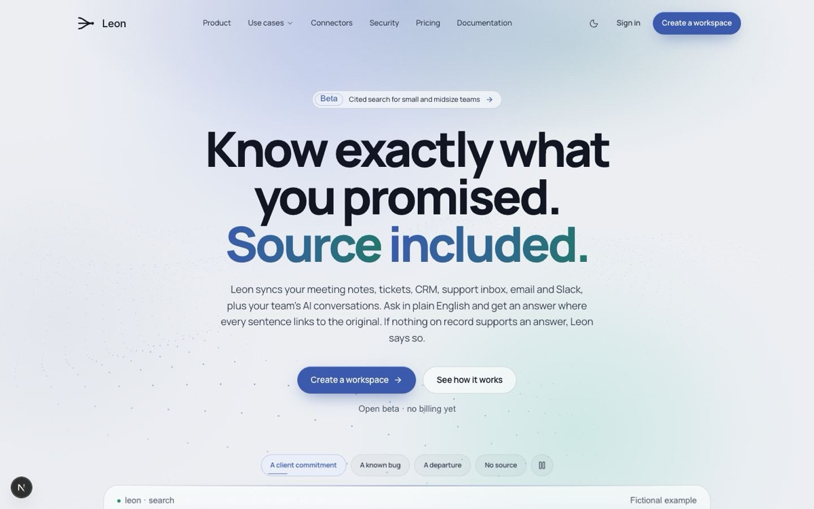
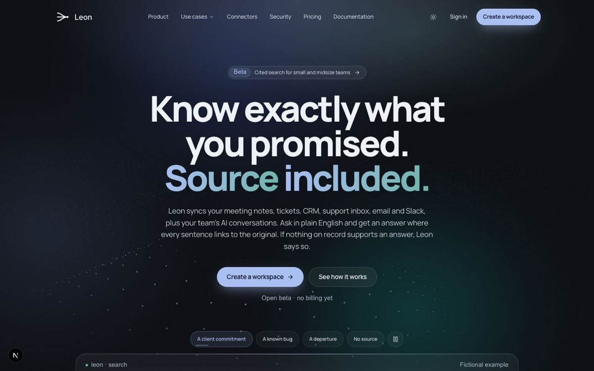
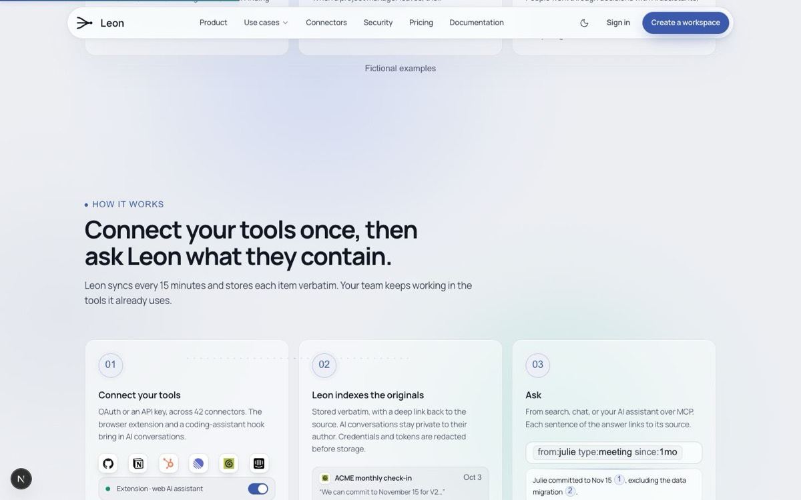
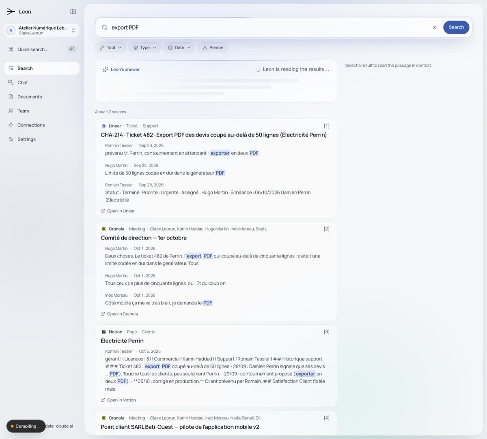
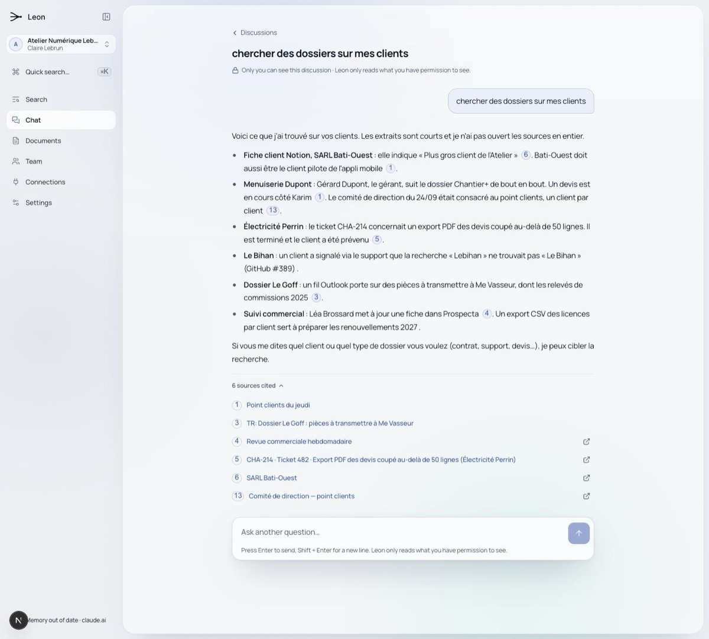
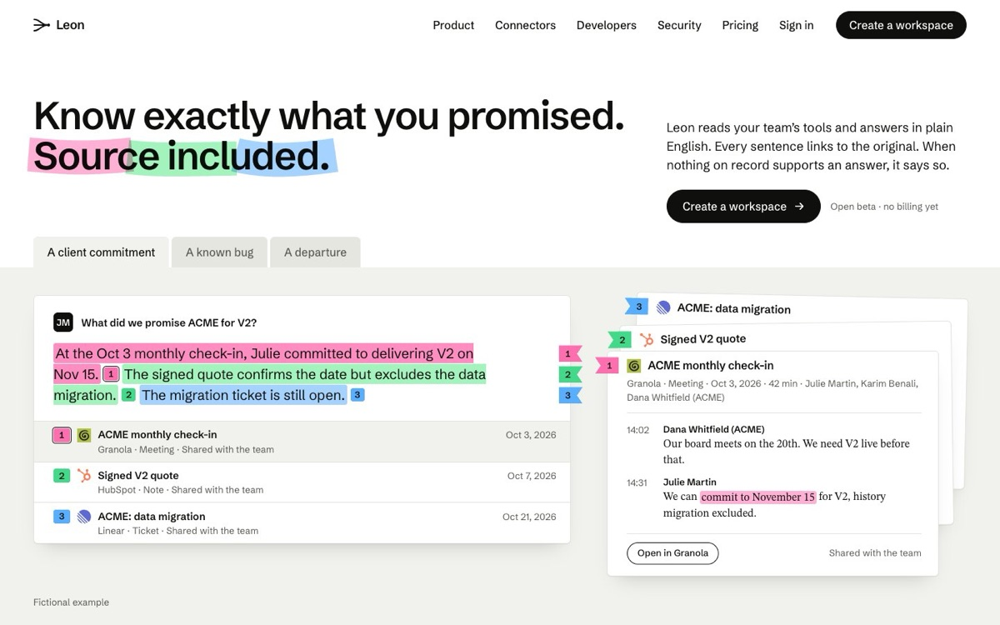
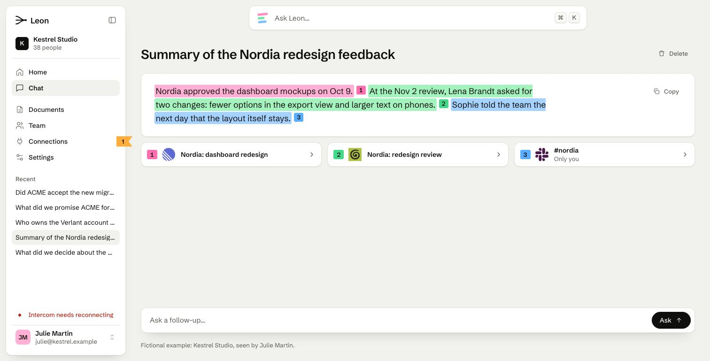

Leon : refonte de l'interface
Le point complet sur l'interface d'aujourd'hui, puis la nouvelle version retenue, « Papier ». Tout est mesuré sur le site et l'appli tels qu'ils sont en ligne le 10 novembre 2026.
1. Le point sur l'existant
Ton ressenti est juste sur les six points, et il se mesure. Ce qui est bon, et qu'on garde dans la nouvelle version : le message (« Know exactly what you promised. Source included. »), la franchise (« I don't know », la liste de ce qui manque en sécurité, la mention « Fictional example »), l'idée de montrer une réponse citée, et le logo.


« Ça ressemble à de l'IA »
Oui. Sur la seule page d'accueil, on compte : 4 titres en dégradé de couleur, 16 panneaux en verre dépoli, 12 petites étiquettes en majuscules posées au-dessus des titres, 37 formes en pilule, 42 boîtes arrondies avec un filet, 118 textes en police « machine à écrire », 13 cartes qui s'inclinent sous la souris, 119 animations (dont 17 qui ne s'arrêtent jamais), un fond de particules, des halos colorés, une sphère de logos en 3D et des étapes numérotées 01, 02, 03.
Chacun de ces éléments est correct pris seul. Ensemble, c'est exactement la liste de ce que produisent les générateurs de sites. Les deux outils d'inspection (Taste et Impeccable) le signalent sans hésiter : 15 règles en échec sur l'accueil. L'appli après connexion a le même habillage : panneaux de verre et halos derrière chaque écran.
« Il n'y a pas d'image de marque »
Le test est simple : remplace le logo par celui de n'importe quelle startup d'IA, et rien d'autre ne dit « Leon ». La police (Manrope) habille des milliers de sites. Aucune couleur, aucune forme, aucun geste n'appartient à Leon. Pourtant le produit a de quoi faire une marque : le numéro de source après chaque phrase, le passage surligné dans le document d'origine, le « je ne sais pas ». Les deux versions partent de là.
« Les couleurs ne sont pas adaptées »
Aujourd'hui : un indigo et un bleu-vert sur fond gris-bleu, sombre par défaut. C'est la famille de couleurs la plus répandue chez les produits d'IA. J'ai regardé douze concurrents (Glean, Dust, Guru, Slite, Dropbox Dash, Onyx, Sana, Hebbia, Mem, Rovo, Tana, Read AI) : presque tous sont en blanc avec un bouton bleu, ou en crème avec une police à empattements. Aucun n'a une couleur forte à lui. La place est libre.
« Les titres sont trop gros »
Le titre de l'accueil fait 86 pixels, en très gras, sur trois lignes, centré, avec un dégradé. Plus bas, un autre fait 96 pixels sur quatre lignes. Les pages intérieures ouvrent sur des titres de 60 à 64 pixels sur trois ou quatre lignes. Ce n'est pas seulement la taille : c'est la taille, plus la graisse, plus le nombre de lignes, plus le dégradé. Les meilleurs sites ont des titres plus calmes (tableau plus bas).
« Des démos plus précises »
L'accueil porte huit zones de démonstration. La grande, en haut, est bonne. Les sept autres sont de petits dessins d'interface, écrits en 11 ou 12 pixels, qui ne ressemblent pas à la vraie appli. Et surtout, on ne peut cliquer sur aucun numéro de source pour voir le document d'origine, alors que c'est la promesse du produit.
« Plus précis » veut donc dire : moins de démos, plus grandes, faites avec les mêmes éléments que la vraie appli, et qui vont jusqu'au bout. Une question, la réponse, un clic sur le numéro, et le compte-rendu de réunion s'ouvre à la bonne phrase, surlignée.
« Il y a trop d'informations »
L'accueil fait 11 écrans de haut, 1 560 mots, 11 sections, 10 jeux d'onglets, et affiche 74 logos (les 42 connecteurs y sont montrés deux fois). En nombre de mots, Leon est dans la moyenne des bons sites. Le vrai problème est le nombre de choses qui se disputent l'œil : 20 tailles de texte différentes, 14 arrondis différents, et la même idée (« chaque phrase a sa source ») répétée quatre fois. Le site entier compte 14 pages et environ 9 000 mots, avec un menu de 6 entrées.

L'appli après connexion


- Ce qui est bien : six entrées de menu claires, une réponse lisible avec ses numéros, des sources avec le passage trouvé et un lien vers l'outil d'origine.
- Même habillage que le site : verre, halos, aucune personnalité. Le passage trouvé est surligné en bleu pâle sur fond bleu pâle : on le voit à peine, alors que c'est le cœur du produit.
- L'accueil est une page de recherche vide avec quatre exemples de syntaxe technique (« tool:github type:ticket »). Pour « tous les employés », c'est du jargon.
- Recherche et Chat font presque la même chose à deux endroits du menu. Un nouveau venu ne sait pas lequel ouvrir.
- Le point du matin n'a pas d'écran à lui. Le site le présente comme une fonction phare, mais dans l'appli on ne le voit pas : il est servi à l'assistant.
- La page Connexions empile l'état des outils branchés et un catalogue de 42 outils, sans ordre de lecture.
2. Ce que font les meilleurs sites aujourd'hui
Mesuré le 10 novembre 2026 sur une quarantaine de sites. Taille du titre principal, graisse (400 = normal, 800 = très gras) et nombre de mots sur l'accueil.
| Site | Titre | Graisse | Mots | Couleurs |
|---|---|---|---|---|
| Leon aujourd'hui | 86 px | 800 | 1 560 | indigo sur gris-bleu |
| Cursor | 26 px | 400 | 1 990 | beige, noir |
| Dia | 39 px | 500 | 590 | jaune |
| Stripe | 48 px | 300 | 2 330 | blanc, violet |
| Mercury | 49 px | 480 | 1 650 | photo, bleu nuit |
| Perplexity (entreprise) | 50 px | 400 | 620 | crème, bleu-vert |
| Claude | 56 px | 400 | 770 | crème, terre cuite |
| Glean (concurrent) | 56 px | 400 | 2 040 | blanc, bouton bleu |
| Slite (concurrent) | 56 px | 500 | 1 080 | blanc, bouton orange |
| Linear | 64 px | 510 | 1 340 | noir |
| Attio | 64 px | 600 | 1 920 | blanc, noir |
| Ramp | 64 px | 400 | 1 470 | blanc, jaune citron |
| Dust (concurrent) | 69 px | 550 | 1 040 | blanc, bouton bleu |
| Granola | 86 px | 400 | 930 | blanc, vert citron |
| Notion | 96 px | 600 | 350 | blanc, noir |
- Le produit, en vrai, dès le premier écran. Linear, Attio, Cursor et Clerk montrent leur interface à taille réelle sous le titre. Pas de dessin, pas d'illustration abstraite.
- Un titre calme. La plupart sont entre 48 et 64 pixels, en graisse normale. C'est le produit qui impressionne, pas le titre. Aucun n'est en graisse 800.
- Une seule couleur forte par marque. Le jaune de Ramp et de Dia, le vert de Supabase, le rouge de Raycast.
- Crème et police à empattements : le nouvel uniforme des assistants d'IA (Claude, Perplexity, Tana, Wispr, Mem). À éviter si on ne veut pas « faire IA » d'une autre façon.
- Presque plus de dégradés, de verre ni de halos chez les meilleurs. C'est devenu la marque des sites générés.
3. La version retenue : « Papier »
L'idée : un surligneur par document d'origine. Chaque phrase de la réponse porte la couleur du document d'où elle vient : la phrase surlignée en rose vient du document rose. Une phrase sans couleur, c'est une phrase que Leon n'écrit pas.
Les marque-pages : dans la marge, chaque phrase a son petit drapeau numéroté, de la même couleur que son document. La phrase, le drapeau et le document sont liés : on pointe l'un, les deux autres s'allument ; on clique, le document s'ouvre au bon passage.
La police : moderne, nette, sans empattements, la même pour les titres et les textes (Schibsted Grotesk).
Les animations : à l'ouverture, la démo se joue toute seule (la réponse se surligne phrase par phrase, les documents arrivent un à un). Plus bas, les trois règles restent fixes à l'écran pendant qu'on défile, et seul leur contenu change. Les 42 connecteurs défilent en boucle, sans fin. Si l'ordinateur du visiteur est réglé pour réduire les animations, tout est affiché d'emblée, immobile.
La section développeurs : une mémoire partagée par l'équipe, et le « dreaming ». Le soir, la session se termine et Leon la garde. La nuit, Leon relit et classe. Le matin, la session suivante démarre à jour, dans n'importe quel outil. Elle tient maintenant sur un seul écran, avec moitié moins de texte.

4. L'appli, dans le style que tu as choisi
Tu as retenu la proposition B, « Bureau », puis validé son écran Connexions après tes remarques : des rectangles plus petits, plus de compteur ni de date, plus de phrase qui explique l'écran. À « on déploie ce style sur les autres écrans ? », tu as répondu oui. C'est fait : toute l'appli est dans ce style, connexion comprise.
- Neuf pages : l'accueil avec le point du matin, le chat, les documents, l'équipe, les connexions, les réglages, et les trois pages d'entrée (se connecter, créer un espace, mot de passe oublié).
- La même règle partout : un écran, c'est un titre et des rectangles. Un rectangle dit un nom et, au plus, une légende. Tout le reste est dans le panneau qui s'ouvre à droite quand on clique dessus.
- Tout répond : chaque bouton fait ce qu'il annonce, avec ses refus et ses confirmations. Exemple : tu poses une question, Leon répond phrase par phrase, tu cliques sur un numéro et le document d'origine s'ouvre au bon passage.

La page de connexion est déjà remplie : clique sur « Sign in ». Pour voir un refus, tape un mot de passe qui contient « wrong ».
5. Ce qui est décidé
- Une seule version : « Papier ». Les premiers jets ne sont plus proposés.
- Pour l'appli : la proposition B, « Bureau ». L'écran Connexions validé sert de modèle à tous les autres.
6. Ce qui n'est pas fait
- C'est une maquette : des pages à part. Rien n'est changé sur le site ni dans l'appli en ligne.
- Dans l'appli, rien n'est gardé d'un écran à l'autre : un outil réparé ou un document ajouté revient à son état de départ quand on change de page.
- Les anciens écrans de l'appli (ceux que tu as refusés) sont encore dans le dossier, mais plus aucun lien de cette page ni du site n'y mène.
- Pas de thème sombre, pas de version française : thème clair et anglais seulement.
- Rien n'est enregistré dans le dépôt : tout est encore à l'état de brouillon sur cet ordinateur.
- Vérifié dans Chrome seulement. Pas essayé dans Safari ni Firefox, ni sur un vrai téléphone.
- Les données des démos sont fictives (la société « Kestrel Studio » et ses clients n'existent pas).
Méthode : captures et mesures faites sur le site et l'appli du 10 novembre 2026, 12 sites concurrents et une trentaine de sites de référence mesurés le même jour, directions tirées avec Impeccable et Taste, vérifications avec UI/UX Pro Max.